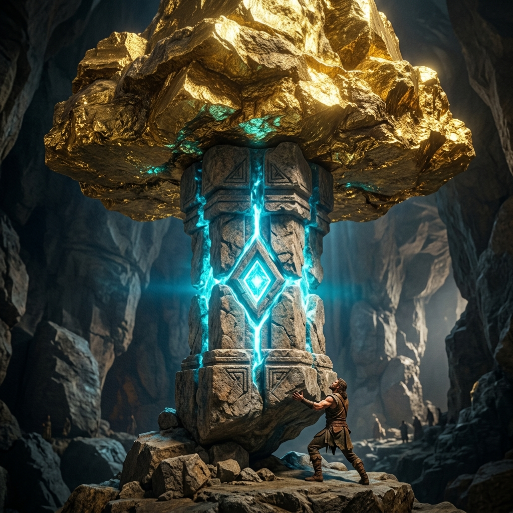
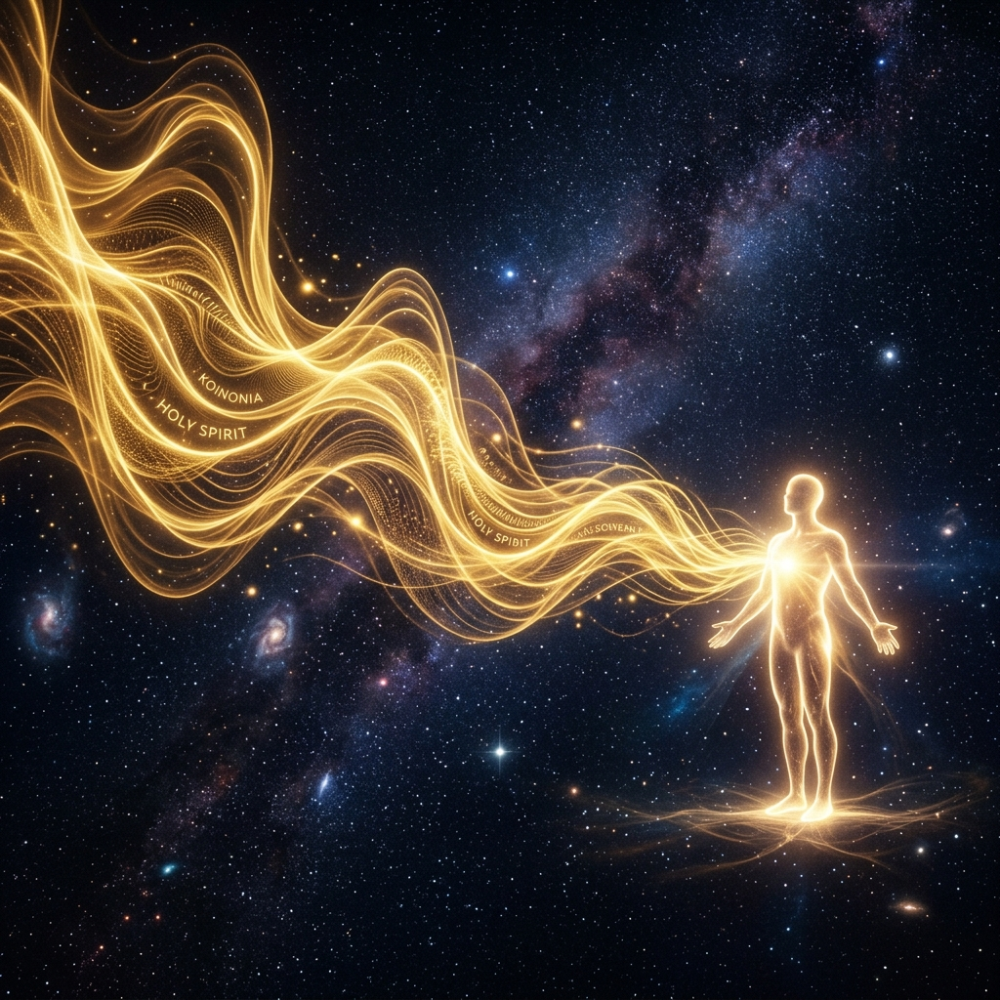

Masterclass Module
THE HOLY SPIRIT
The Person Who Makes Everything Work
He is not a force, an energy, or a wind. He is a Person. The third Person of the Trinity. You cannot build a relationship with a force. You can only utilize a force.
🔑 The Inciting Thesis
"There is a version of Christianity that runs without Him. It has doctrine, structure, and procedure.
And then there is a Christianity that cannot function for a single day without Him."
🕊 The Seven Dimensions
For a person who has entered into faith, His ministry expands dramatically.
🏛 The Load-Bearing Protocol (SIMULATION)
He operates in two distinct dimensions: The Anointing Within (Character) and the Anointing Upon (Power).
The anointing upon can only be safely sustained by someone whose anointing within is strong. Character is the load-bearing wall for power.

STRUCTURAL CAPACITY SIMULATOR
Drag the sliders to test the structural integrity of a vessel. Determine what happens when Power exceeds Character.
(Anointing Within)
(Anointing Upon)
⛔ Deep Dives: Three Restrictive Errors
These three wrong approaches severely limit the relationship with the Holy Spirit.
TREATING HIM AS A FORCE
When you approach the Holy Spirit as power to be tapped rather than a Person to be known, you get shallow, transactional results. You cannot know a force. You can only use it.
SEEKING GIVERS VS. SEEKING HIM
Many engage Him only in crisis. They seek His hands and ignore His face. "You will find Me when you search for Me with ALL your heart." The believer who only comes when they need something never knows the dimension that transforms them from the inside.
NEGLECTING THE ANOINTING WITHIN
Pursuing visible, external power while harboring pride, unresolved anger, and moral compromise. The gifts are real, but character is the validator.
📡 The Koinonia Signal Tuner (SIMULATION)
The highest core operating mechanism of the Holy Spirit is Koinonia (Intimate communion / deep fellowship). He transfers what He is to the person who stays long enough.
But He can be grieved, and He can be quenched. This introduces static into what should be a clean communication channel.

THE KOINONIA SIGNAL
🪞 Diagnostic Reflection
Is your relationship with the Holy Spirit primarily transactional (engagement only when you need something) or is it genuinely relational (seeking Him because He Himself is the prize)?
🌐 The Rebuilt Architecture
COMMUNION ESTABLISHED
"Holy Spirit, I abandon transactional Christianity. You are a Person, entirely divine and entirely present. I yield to the Anointing Within to anchor the power. Let Koinonia be my default state."